MA Computational Arts thesis · Goldsmiths · 2026 · shown at Scream, Unsynced (degree show, Aug 2026)
Solo Choir
A vocal instrument that turns one singer into a choir. You sing, and the system answers with soprano, alto, tenor and bass, in real time, on a laptop CPU.
demo, 2 min · vimeo.com/1223687812 · code on github
It began with a question I had as a choir singer: what would it take to sing every part myself?
Three of the four parts are generated live by neural voice models trained on other voices. The fourth is your own voice, unconverted. They sing at the same time as you, from four speakers around you, or answer a finished phrase once you stop or press the button on the microphone.
The instrument grows out of my earlier work with a DSP pitch-shift harmoniser and replaces its fixed intervals with distinct singing voices. It sits on a desk, with two modular worn elements: a bone-conduction headband and an exciter collar.
A table, four speakers, a head, a microphone. One shell, four ways to sing with it.
Four 3D-printed horn speakers stand around a head model, each carrying one voice. A boom microphone with a physical button faces the singer. A laptop runs everything on CPU, with no GPU and no cloud. The performer switches between four modes with a single key, with no gap in the sound.
- 1Respondsing a phrase, stop or press the button, and the choir answers with the phrase in four parts
- 2Livethe harmony follows you as you sing, from a pre-rendered bank of sung notes, no model in the loop
- 3Live + neuralthe same bank, but every note in it was rendered by the neural voice models at startup, playback only
- 4Live · neuralevery harmony part converted by a neural model as you sing, the only mode with a model in the loop
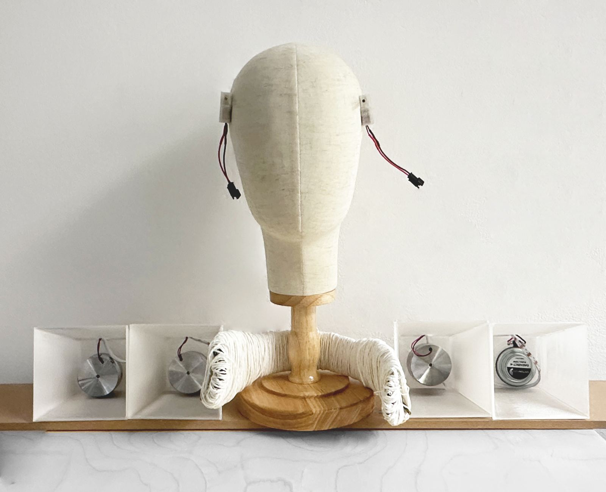
the tabletop instrument, with both wearables resting on the head model
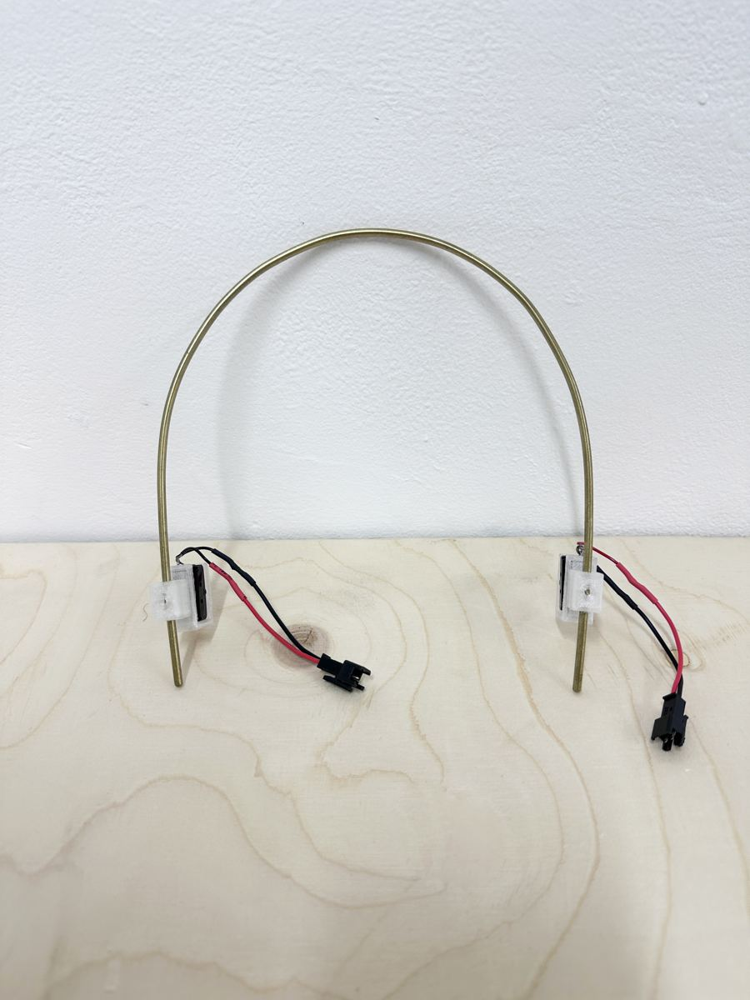
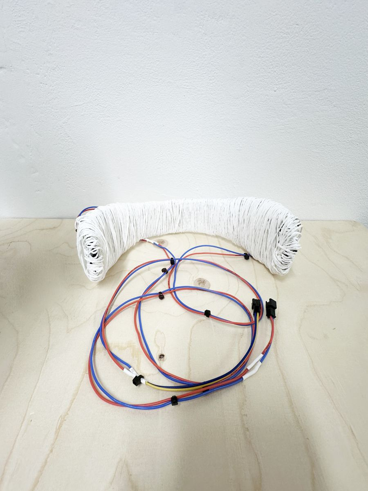
left: bone-conduction headband · right: exciter collar
Two worn prototypes that let the harmony be felt on the body.
Bone-conduction headband. A hand-bent brass rod with printed clamps and one bone-conduction driver on each side. It seats a harmony part on the skull while both ears stay open, so you still hear your own real voice and the room.
Exciter collar. A dog-bone form in a 3D-printed auxetic lattice, a solid disc under each surface exciter, one U-shaped brass tube across, wound over in paper fibre. It hangs in the hollow between neck and shoulder, not against the throat. Bystanders hear it, the wearer hears it, and the wearer feels the chord as vibration.
Both were shown next to the table, on the head model, as the embodied direction of the same instrument.
Printed, soldered, wound and modelled by hand.
Every sounding part is built rather than bought. Four printed horn speakers with LED strips. Two hand-soldered amplifier units, each a LiPo cell, a charger, a boost converter and a PAM8403 amplifier around a Raspberry Pi Pico. Every unit shares one JST connector, so any speaker, headband or collar plugs into any amplifier. The microphone shell is the third printed version.
The collar and headband were modelled in Fusion 360 on a body model, and an auxetic test coupon was printed before the full form was committed. The button talks to the laptop over Bluetooth with no pairing step, with a wired fallback.
Method. The ear decides, measurement guards against regression. Every change was judged by blind, level-matched listening, and the dead ends are kept in a registry inside the repo. One example: two 8-singer models were trained for thicker harmony, but blind listening could not tell them from detuned copies of one voice, so the copies shipped and the models did not.
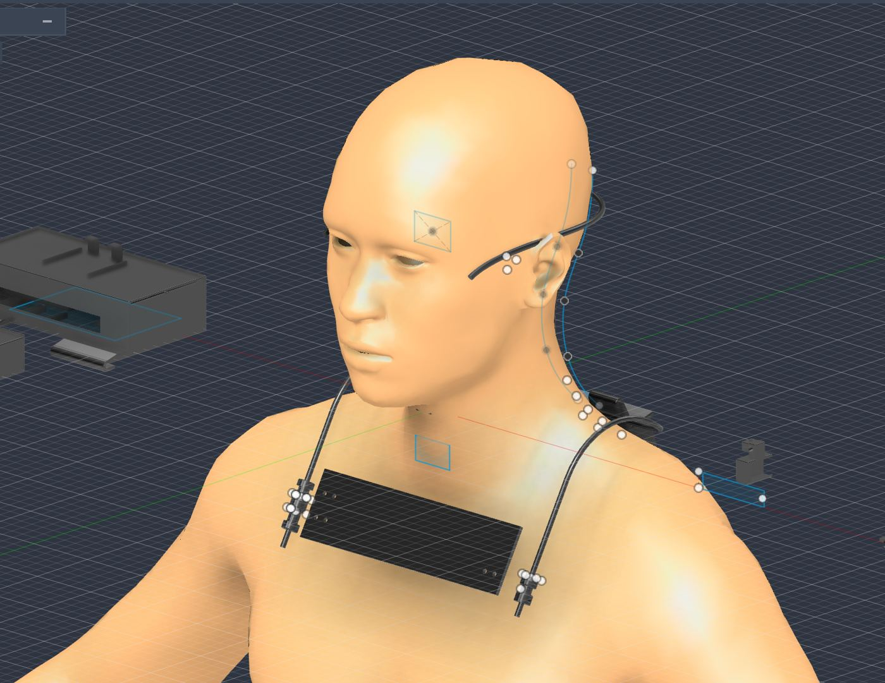
collar and headband modelled on a body in Fusion 360
seven months of making — bench tests · training · the build
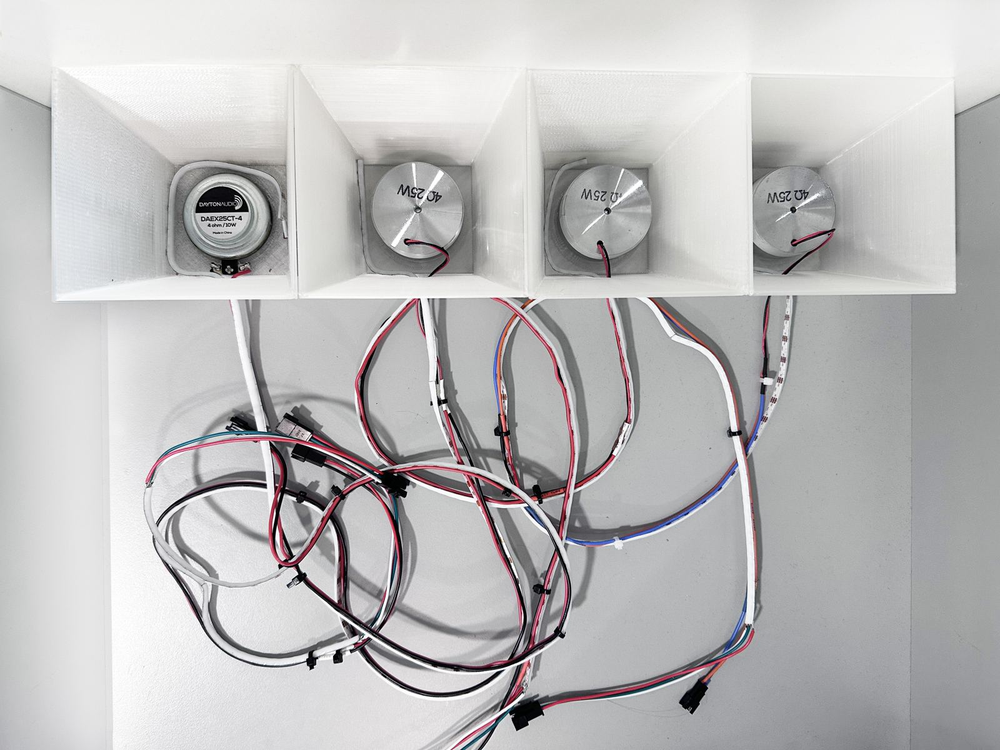
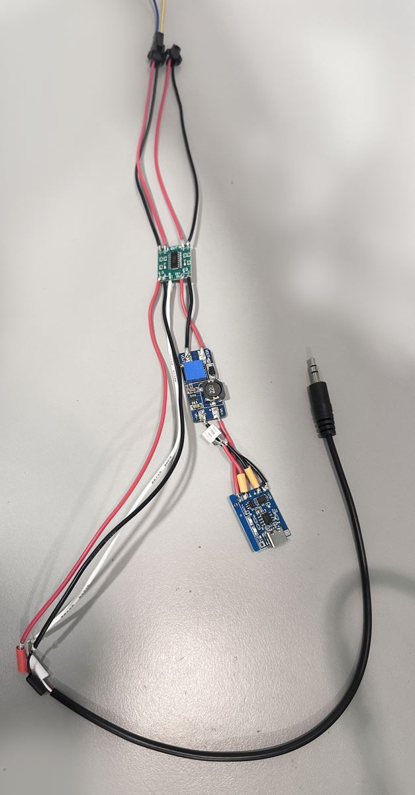
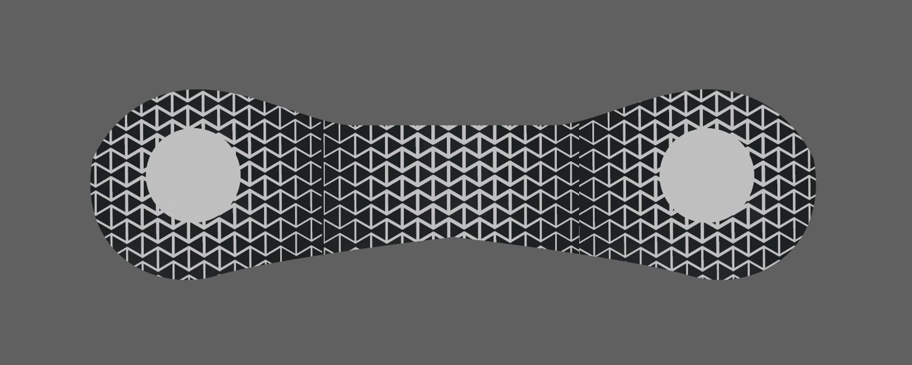
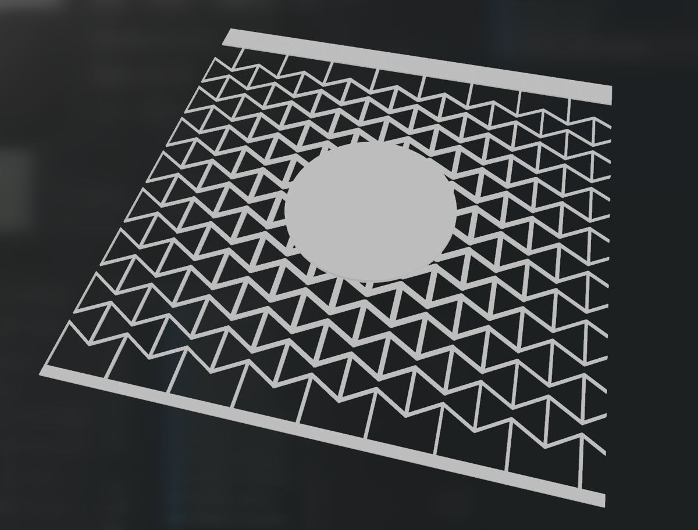

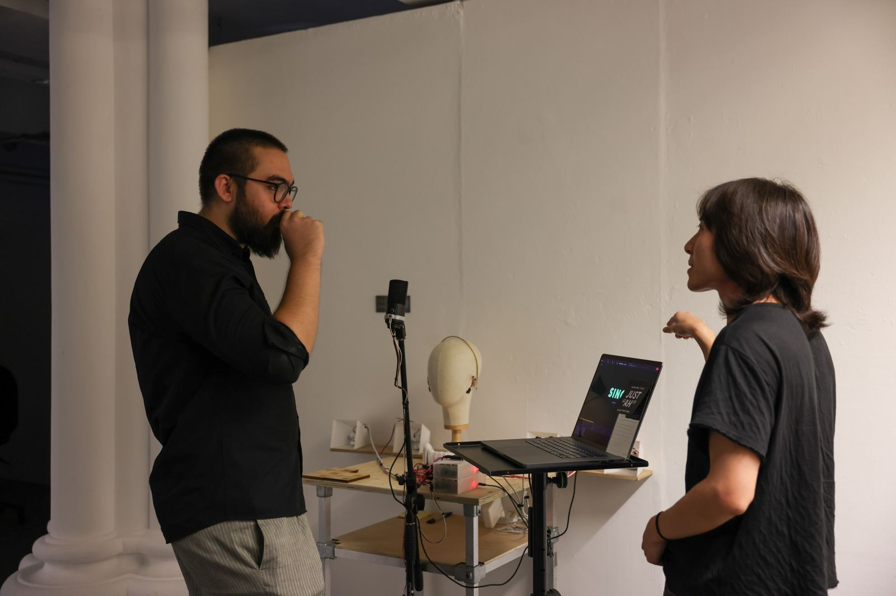
04 — research & honesty
where it standsThe claim is the integration: one singer, four distinct singing voices answering in real time on a laptop, with the harmony delivered to the body as well as the room.
Each ingredient has prior art: real-time harmonisers, one-singer instruments, neural voice conversion, wearable sound. What is new is putting them in one instrument that a visitor can use within seconds, and extending it onto the body. The embodied claim, that feeling a part helps you learn it, is a hypothesis I have not yet tested.
- lineageSmart Vocal Harmonizer (DSP pitch shift) → Choir of Three (DDSP, one voice) → Solo Choir (four neural voices, live)
- voicessoprano and bass trained on the open M4Singer dataset; alto trained on a friend's voice with consent, kept anonymous; tenor is the singer, unconverted
- boundarythe instrument is gated by microphone level, so it cannot tell singing from speech. Talk to the audience and the choir answers you. This is printed on the visitor card.
- not done yetno participant study. The learning study (bone conduction vs headphones) was cut before the viva and is the next piece of work.
- codeMIT-licensed, models excluded for licence and privacy reasons. github.com/yvwHY/solo-choir ↗
05 — exhibition
Scream, Unsynced · MA Computational Arts Festival 2026 · St James Hatcham Building, Goldsmiths · 27–29 Aug 2026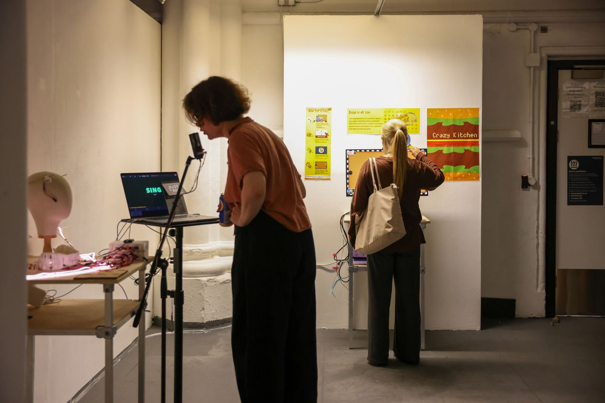
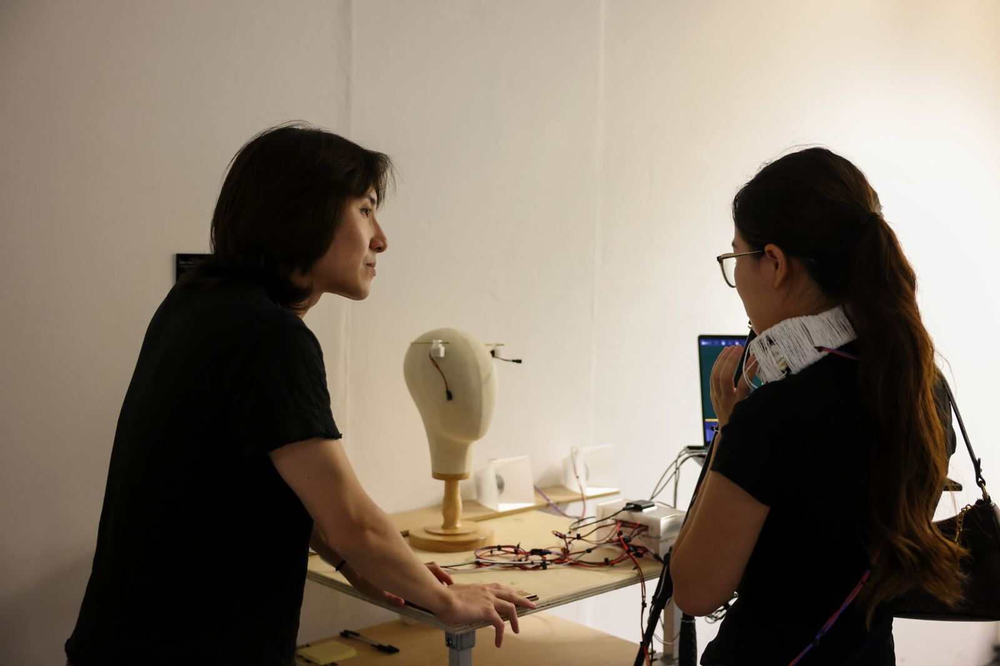
visitors sang, talked, and were answered. Three days at one table.